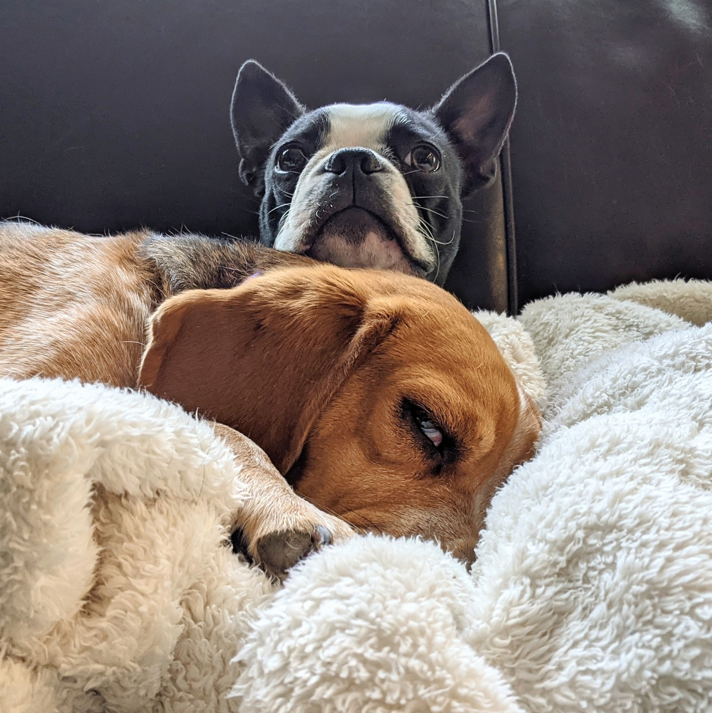

Lola would appreciate it if Otis would chill for a minute.
This is a picture of Lola and Otis.
Otis is a pure bread Boston Terrier. Lola is advertised as a pure bread Beagle but we believe her lineage to be dubious.
Lola is six years old on January 26th. Otis will be two years old in June. They are wonderful dogs.